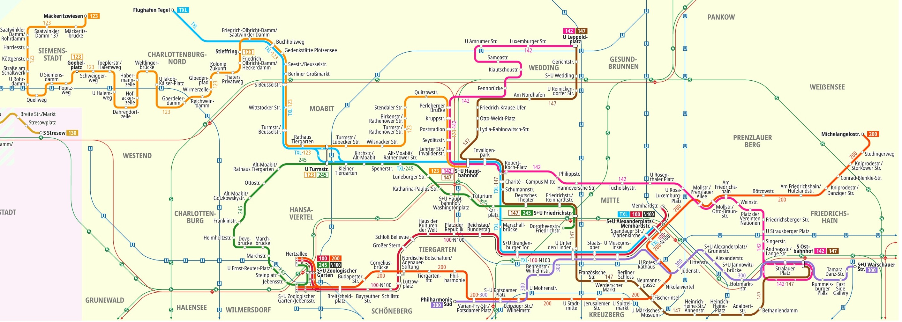

🎛️ 綜合調度總控台 (28小時制)
連線中...🗺️ 點擊展開 / 收起《The Bus 柏林路線圖》輔助參考 (支援滾輪上下左右滑動)

🔄 替班轉移
➔
📊 動態畫布 (04:00~隔日08:00)
早班 (約04:30-13:30)
中班 (約09:30-18:30)
晚班 (約13:30-22:30)
夜班 (約22:00-06:00)
💡 跨日車趟將完美連續顯示於畫面右半部，不會斷裂。
排班對象
📝 詳細發車時刻表
| 發車~到達區間 | 路線 (Tour) | 趟數 | 起站 | 終站 | 駕駛長指派 (含替補) | 車輛配置 | 操作 |
|---|